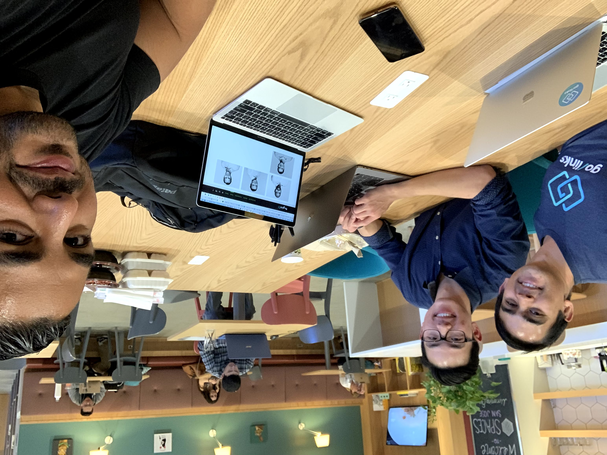
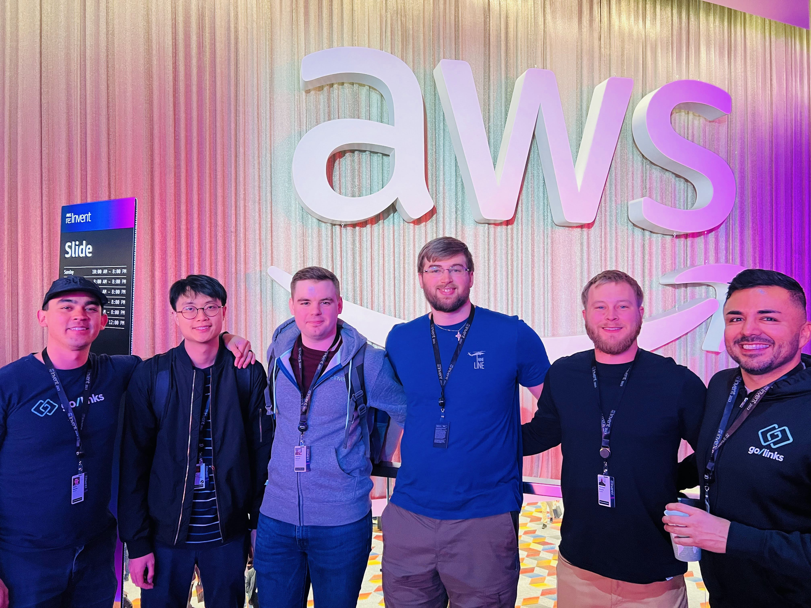
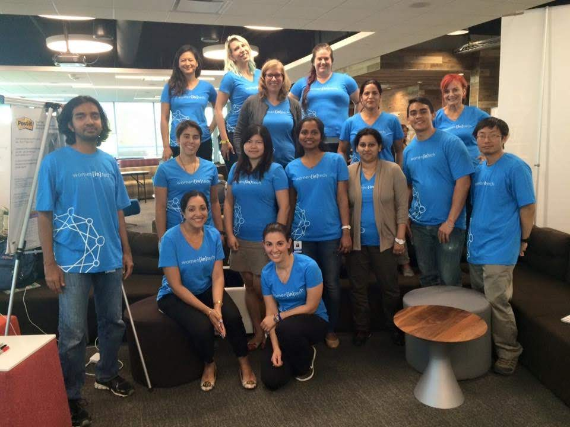

Your browser doesn't support the features required by impress.js, so you are presented with a simplified version of this presentation.
For the best experience please use the latest Chrome, Safari or Firefox browser.
Sean Thomas Burke
Head of Engineering at GoLinks
Presentation Overview
What We'll Cover Today
- 🎓 My Journey: UCI to Now
- 🚀 GoLinks
- ⚡ Tech Stack
- 📈 Industry Technology Trends
- 💼 The Job Market
My Journey
Academic Foundation
- ⚡ Electrical Engineering & Business Information Management
- 🏛️ Engineering Student Council
- 🤝 ΣΝ (Sigma Nu)
- 🏠 Resident Advisor in Middle Earth
- 🌟 UC LEADS
Struggled to find a job
- ❌ Failed interviews: Microsoft, Facebook, Google, SpaceX, Twitter, Redfin, Thumbtack, Pinterest...
- 🎯 The numbers game: Rejections are part of the journey
- ✅ One success: LinkedIn UI Engineer (the only offer that mattered)
- 💡 Key insight: It only takes one "yes"

The journey begins - graduation day (and yes, my car broke down that day!)
From Employee to Entrepreneur
- 💼 LinkedIn (5 years): UI Engineer → Understanding Big Tech
- 🚀 The leap: Starting GoLinks with UCI fraternity brothers
- 🏗️ YC startup: Building something from scratch

Finally! My first day at LinkedIn after all those rejections
Key Lessons from My Journey
- 💪 You will face a lot of rejection, it is part of the process
- 🤝 Relationships matter, build your network
- 📈 Always build your brand and skills

At Y Combinator - the startup accelerator that changed everything
2. The Power of Networks: Your UCI Advantage
Relationships Are Everything
- 🤝 Fraternity connections → Co-founders at GoLinks
- 🎓 UCI alumni network → Opportunities everywhere
- 🚀 Professional relationships → Career acceleration

UCI Alumni networking at LinkedIn - your future colleagues are everywhere
Building Your Network Starting Now
- 🏛️ Join student organizations
- 🎪 Attend career fairs and meetups
- 👥 Connect with classmates (they'll be your future colleagues)
- 👨🏫 Engage with professors and TAs
- 💻 Participate in hackathons and competitions
[Image: Student Networking Activities Collage]
The Compound Effect of Relationships
"The person sitting next to you in class could be your future co-founder"
- 🌱 Invest in relationships early
- 🤲 Help others before you need help
- 🔗 Stay connected after graduation
UCI Alumni Success Stories
- 💰 Levels.fyi founders - UCI alumni creating salary transparency
- 🚀 Countless startups founded by UCI graduates
- 👑 Leadership positions at major tech companies
- 💎 Your network is your net worth
[Image: UCI Alumni Success Map - Companies and Startups]
Networking Best Practices
- 💯 Be genuine - focus on building real relationships
- 🎁 Give before you receive
- 📞 Follow up and stay in touch
- 💼 Use LinkedIn strategically
- 🎯 Attend industry events and conferences

The power of professional networking - connections lead to opportunities
3. GoLinks: From Idea to 50-Person Company
What is GoLinks?
- 🧠 Knowledge management platform serving thousands of companies
- 🛠️ Four core products:
- 🔗 GoLinks: Short link management
- 🔍 GoSearch: Enterprise search
- 👥 GoProfiles: Team directory

Trusted by thousands of companies worldwide
The Growth Story
- 🌱 Started: 2-3 people (UCI friends)
- 🏢 Today: ~50 employees
- 👨💻 My role: Built and scaled the engineering team
- 💡 Key learning: Hiring and team building is as important as coding

The three co-founders - all UCI alumni
Startup vs. Big Tech
Big Tech (LinkedIn)
- 📋 Structured processes
- 🎯 Specialized roles
- 🏛️ Established resources
- 📊 Scale optimization
Startup (GoLinks)
- 🎩 Wear all hats
- 🥞 Full-stack expectations
- 🔨 Build everything
- ⚡ Speed and iteration
[Image: Big Tech vs Startup Environment Comparison]
Technical Challenges at Scale
- 🏢 Building for thousands of enterprise customers
- 📈 Scaling infrastructure and team simultaneously
- ⚖️ Maintaining product quality while moving fast
- 🔧 Creating robust engineering processes
[Image: Technical Architecture and Scaling Challenges]
Lessons from Building a Team
- 🎯 Hiring is the most important skill for leaders
- 🌱 Culture scales, processes don't always
- 🌈 Diverse perspectives drive innovation
- 💬 Remote-first requires intentional communication

Early days at WeWork - building the dream
4. What Hiring Managers Actually Look For
Recent Intern Hiring Insights (2024)
- 📊 Application volume: 2,594 applicants → 7 final hires
- 🔍 The funnel: 313 screened → 210 quiz → 30 passed → 20 projects → 7 selected

Hiring UCI alumni at AWS conference - the network effect in action
Beyond the Resume
- 🧩 Problem-solving ability over memorized algorithms
- 🔄 Adaptability in uncertain situations
- 💬 Communication skills - can you explain your thinking?
- 🌱 Growth mindset - how do you handle feedback?
- 🤝 Cultural fit - will you thrive in our environment?
What Engineering Managers Want
- 🏆 Ownership mentality: Take responsibility for your work
- 🔍 Curiosity: Ask questions, dig deeper
- 🤝 Collaboration: Work well with others
- ⚡ Learning agility: Pick up new technologies quickly
Red Flags in Interviews
- 🚫 Can't explain their own code or projects
- 👎 Blames others for failures
- 😴 Shows no curiosity about the company or role
- 🧱 Rigid thinking - only one way to solve problems
- 💔 Poor communication or attitude
[Image: Interview Red Flags Warning Signs]
How to Stand Out
- 🔥 Show genuine passion for technology and learning
- 💪 Demonstrate impact in previous projects
- 🤔 Ask thoughtful questions about the role and company
- 📈 Show how you've grown from challenges
- 💯 Be authentic - don't try to be someone you're not
[Image: Standout Candidate Characteristics]
5. Industry Trends: The AI Revolution Changes Everything
The Current Landscape
- 🤖 AI-assisted development is now the norm
- 🥞 Full-stack expectations for all engineers
- ⚛️ React Server Components and modern frameworks
- 🔧 DevOps integration into developer workflows
The Leveling Effect of AI
Good news: AI democratizes access
- 🚀 Junior developers can write senior-level code with AI assistance
- ⚡ Learning new technologies is faster than ever
- 📚 Documentation and debugging are significantly improved
[Image: AI Democratization - Leveling the Playing Field]
The Challenge: Higher Expectations
- ⚠️ Basic coding skills are table stakes
- 🧩 Problem-solving and system design become differentiators
- 💼 Understanding business context becomes crucial
- 🤖 AI literacy is now a requirement, not a bonus
[Image: Evolving Skill Requirements - Before and After AI]
Industry-Relevant Skills (2024-2025)
- 🎨 Frontend: React, TypeScript, modern CSS
- ⚙️ Backend: Node.js, Python, cloud platforms
- 🐳 DevOps: Docker, CI/CD, cloud deployment
- 🧠 AI/ML: Understanding capabilities and limitations
- 🏗️ System Design: Thinking at scale
[Image: 2024-2025 Tech Skills Roadmap]
Preparing for the Future
- 🎯 Focus on fundamentals that don't change
- 🧠 Learn to learn - adaptability is key
- ⚖️ Understand AI tools but don't become dependent
- 🧩 Develop strong problem-solving skills
- 🔍 Stay curious about emerging technologies
[Image: Future-Proof Career Strategy]
6. Creators vs. Consumers: Your Competitive Edge
The Creator Mindset
- Build projects and share them
- Write technical blogs about their learning
- Contribute to open source
- Create tutorials and help others
- Use AI as a tool to amplify their capabilities
[Image: Creator vs Consumer Mindset Comparison]
The Consumer Trap
Consumers:
- Only consume content and tutorials
- Copy code without understanding
- Rely entirely on AI without learning fundamentals
- Don't share their knowledge or experiences
[Image: Consumer Trap - Passive Learning Cycle]
How to Become a Creator
- Document your learning journey through blogs
- Build projects that solve real problems
- Share your code on GitHub with detailed READMEs
- Teach others what you've learned
- Use AI strategically to learn faster, not as a crutch

Co-founders at hackathons - building and creating together
Building Your Creator Portfolio
- Start with class projects - document your process
- Build something you're passionate about
- Write about challenges and solutions
- Share your failures and what you learned
- Help other students with similar problems
[Image: Creator Portfolio Examples - Projects and Content]
The Compound Effect of Creating
- Your content becomes your portfolio
- Teaching others solidifies your own learning
- You build a reputation in the community
- Opportunities find you instead of you chasing them

LinkedIn developer hackathon - where ideas come to life
7. Important Distinctions for Your Career
Computer Science ≠ Coding
- CS fundamentals: Algorithms, data structures, system design
- Problem-solving: Breaking down complex problems
- Mathematical thinking: Logic and optimization
- Coding: Just the implementation tool
"Vibe Coding" vs "Engineering Excellence"
Vibe Coding (What to avoid):
- Writing code without understanding the problem
- Copying solutions without learning principles
- No consideration for maintainability or scale
- Using AI to generate code you can't explain

The evolution of AI coding strategies - from vibe coding to engineering excellence
Engineering Excellence
- Understanding the "why" behind every decision
- Writing maintainable, scalable code
- Considering system design and architecture
- Using AI to enhance your understanding, not replace it
[Image: Engineering Excellence Principles]
The Importance of Fundamentals
- Frameworks change, principles endure
- Strong fundamentals enable quick adaptation
- Understanding "why" helps you debug and optimize
- Fundamentals are your competitive advantage
[Image: Technology Stack Evolution - Fundamentals vs Trends]
Building Strong Foundations
- Master data structures and algorithms
- Understand system design principles
- Learn debugging and problem-solving methodologies
- Practice explaining complex concepts simply
- Focus on code quality and best practices
[Image: Strong Foundation Building Blocks]
8. Modern Interview Processes
Technical Assessments
- HackerRank style: No AI allowed, fundamentals testing
- Project-based: Build something real (AI allowed)
- Adaptation exercises: Problem-solving with constraints
- System design: How do you think about scale?
[Image: Modern Interview Process Flow]
Standing Out in Interviews
- Show, don't tell: Have projects that demonstrate your skills
- Tell a compelling story: Connect your experiences
- Ask thoughtful questions: Show genuine interest
- Demonstrate learning: How do you grow from feedback?
[Image: Interview Success Strategies]
The New Reality: AI in Interviews
- Some assessments allow AI, others don't
- You need to be comfortable both ways
- Interviewers will ask about your AI usage
- Focus on problem-solving process, not just solutions
[Image: AI in Interview Process - When and How]
Project-Based Assessments
- Build a real application (e.g., Wordle clone)
- Demonstrate full-stack capabilities
- Show code quality and documentation
- Explain your technical decisions
- Deploy and share your work
[Image: Project Assessment Examples and Criteria]
Interview Preparation Strategy
- Practice coding without AI first
- Build a portfolio of diverse projects
- Prepare stories about your experiences
- Research the company and role thoroughly
- Practice explaining your thought process
[Image: Interview Preparation Checklist]
9. Building Your Digital Presence
GitHub Portfolio
- Green squares: Consistent contributions matter
- Quality projects: Complete, documented, deployed
- Open source participation: Show collaboration skills
- Professional README: Tell your story
[Image: Excellent GitHub Profile Examples]
LinkedIn Optimization
- Professional imagery: First impressions count
- Portfolio integration: Link to your best work
- Content creation: Share your learning journey
- Network actively: Connect with classmates and professionals
[Image: Optimized LinkedIn Profile Example]
Technical Blog
- Document your projects: Explain your decisions
- Share learning experiences: Others learn from your journey
- Showcase problem-solving: Walk through challenges
- Build your voice: Establish thought leadership
[Image: Technical Blog Examples and Platforms]
Personal Website/Portfolio
- Showcase your best projects
- Tell your story and background
- Demonstrate your design and development skills
- Make it easy for recruiters to contact you
- Keep it updated with recent work
[Image: Personal Portfolio Website Examples]
Content Strategy
- Share your class projects and learnings
- Write about challenges you've overcome
- Create tutorials for concepts you've mastered
- Engage with the developer community
- Be consistent but authentic
[Image: Content Creation Strategy Timeline]
10. Practical Next Steps
For Current Students
- Start building today: Don't wait for the "perfect" project
- Use AI strategically: Learn with it, don't let it replace learning
- Network intentionally: Your classmates are your future colleagues
- Document everything: Your learning journey is valuable content
[Image: Student Action Plan Roadmap]
Focus on Fundamentals
- AI changes, principles don't
- Master data structures and algorithms
- Understand system design concepts
- Learn debugging and problem-solving methodologies
- Practice explaining complex concepts simply
[Image: Fundamental Skills Priority Matrix]
Build Your First Portfolio Project
- Choose a problem you're passionate about
- Build a full-stack solution
- Deploy it and make it accessible
- Document your process and decisions
- Share it with the community
[Image: Portfolio Project Development Cycle]
Start Your Professional Network
- Connect with classmates on LinkedIn
- Join relevant Discord/Slack communities
- Attend virtual and in-person meetups
- Participate in hackathons
- Engage with open source projects
[Image: Professional Networking Action Items]
Create Your Learning Plan
- Identify skills gaps for your target roles
- Set up a consistent learning schedule
- Mix theoretical learning with practical projects
- Track your progress publicly
- Adjust based on industry feedback
[Image: Personal Learning Plan Template]
11. Resources and Community
Essential Platforms
- Levels.fyi: Salary transparency (founded by UCI alumni!)
- GitHub: Your professional portfolio
- LinkedIn: Professional networking
- Stack Overflow: Technical community
- Discord/Slack: Developer communities
[Image: Essential Platform Logos and Uses]
Continuous Learning
- Documentation: Always read the official docs
- Open source: Learn from real codebases
- YouTube/tutorials: Visual learning
- Books: Deep technical knowledge
- Conferences: Industry trends and networking
[Image: Learning Resources Ecosystem]
UCI-Specific Resources
- UCI Alumni Network in tech
- Career Center resources and events
- Student organizations and clubs
- Professor office hours and research opportunities
- Industry partnerships and internship programs
[Image: UCI Resources Map and Connections]
Building Your Learning Community
- Form study groups with classmates
- Join coding bootcamp communities
- Participate in online forums and discussions
- Find mentors in your field of interest
- Become a mentor to others when you can
Staying Current with Industry
- Follow tech leaders on Twitter/LinkedIn
- Subscribe to industry newsletters
- Listen to developer podcasts
- Attend virtual conferences and webinars
- Read technical blogs and case studies
[Image: Industry Information Sources and Feeds]
12. Final Thoughts: The Long Game
Success Metrics That Matter
- Impact: What problems are you solving?
- Growth: How fast are you learning?
- Relationships: Who are you building with?
- Value creation: What are you contributing?
The UCI Advantage
- Strong technical foundation: EE, CS, and interdisciplinary programs
- Alumni network: Successful graduates everywhere
- Innovation culture: Start something new
- Location: Heart of tech in Southern California
[Image: UCI Campus and Tech Industry Connections]
Remember These Key Points
- Rejection is redirection: Every "no" leads to the right "yes"
- Networks compound: Invest in relationships early
- Technology changes, fundamentals don't: Focus on problem-solving
- Your journey is unique: Don't compare your chapter 1 to someone's chapter 20
[Image: Key Principles Visual Summary]
The Power of Starting Now
"The best time to plant a tree was 20 years ago. The second best time is now."
- Start building your career today
- Every small step compounds over time
- Your future self will thank you
Your Next Action
- Choose one thing from this presentation to implement this week
- Connect with one new person in your field
- Start documenting your learning journey
- Build something, no matter how small
- Share your progress with others
[Image: Action Plan - This Week's Goals]
Q&A
Questions? Let's discuss your specific challenges and opportunities.
[Image: Contact Information and Social Links]
Connect with me: [Your contact information]
GoLinks: Check out what we're building at golinks.io
Thank You!
Start Building Your Future Today
[Image: Inspirational Career Journey Visualization]
"Your journey from college to career starts with a single step. Take it today."